Start the journey
Content note: This material explores themes of death and God.
Content note: This material explores themes of death and God.
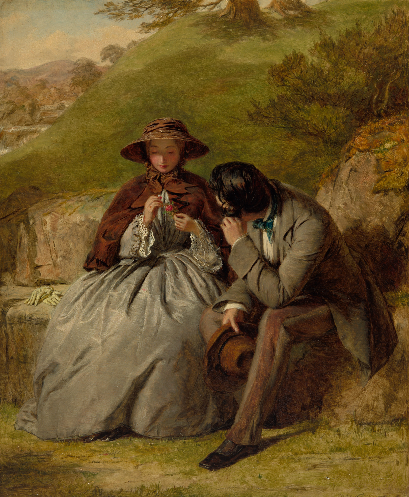
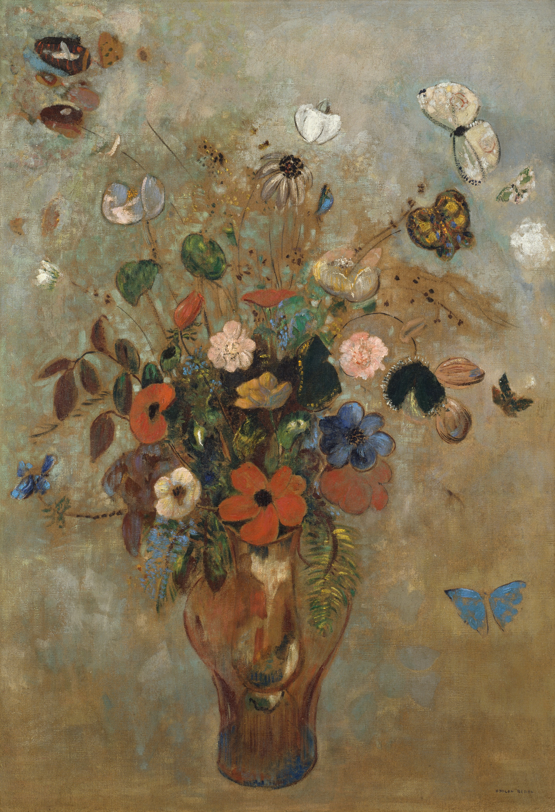
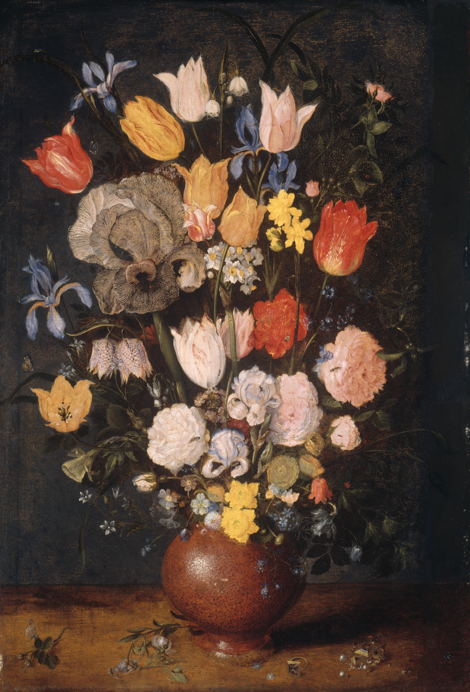
Eventually, Fred and Linda retired and they moved to St. Catharines. Linda was 52, Fred was 57. They chose St. Catharines because it was close to Niagara-on-the-Lake, a place of beauty for Linda, but also a central point in Niagara.
They sold everything in their house and moved. They chose Ontario because it had a thriving creative scene compared to Saskatchewan. With a hugely successful background in floral design, being surrounded by creativity and beauty was a huge deciding factor in moving.
“We were driving down the Niagara Parkway after only being here for 2 weeks. I looked out the window at all the beauty and felt that everything I thought and felt and wanted was manifested outside in the world around me. I could hardly believe we actually lived here.”
When we moved to Ontario we came with nothing, no bedding or dishes – nothing. We bought a condo and renovated it for about 6 months. Then we spent about a year and a half furnishing the entire place. We were buying a household. It was fun, a great adventure. We used our lack of household items as a way to find our way around Ontario. We would visit a new city to buy our sheets or towels. We went all over the place. Finally, we agreed that we were done!
Two weeks later, something completely unexpected happened.
When I realized what had happened, I called 911 immediately. The woman on the phone told me what to do. She instructed me to pull him off the chair by the ankles to give him CPR. “Don’t worry,” she said, “You won’t hurt him.” I’ve never had to give CPR before, and that’s something I never want to do again.
I knew when I saw his face that he was dead and there wasn’t anything anyone could do for him.
The paramedics came and took him to the hospital. It was at that point that I thought I should tell someone what was happening. Fred and I had talked occasionally to the other people in our condo, but we mostly kept to ourselves. I knocked on my neighbour’s door and explained the situation. They said they would drive me.
I remember the Emergency Doctor coming to talk to me, saying they had tried all they could but couldn’t get Fred back. He asked me if I wanted to see Fred. I wasn’t sure what to do, but knew in the moment this was a decision I wanted to get right. After deliberating for awhile, I decided I would go see him.
When I saw his face, it looked like he was asleep. He looked like he was at peace.
Fred and I used to get in the car and just drive and drive. After he passed, that became a lot harder for me. I always thought I was a strong person and confident. But, it’s surprising how much confidence you lose as a widow and how much effort, true effort, it takes to come out of it and believe in yourself. I’ve learned it’s not unusual [situation] for people who’ve lost a loved one.
You’ve been bleeding out for so long, you have to let that cauterize to start a new life. And that’s really hard to do. You have to be intentional – it doesn’t just happen. I knew I didn’t want to be someone who lived in the past and couldn’t get over what happened to me. I just wanted to keep building and make the most of what I could. So that’s what I did. Never quit, never surrender.
About a year and a half later after Fred died, I felt a lump on my neck. I waited two weeks, but nothing changed, so I went and saw the doctor. They sent me for tests. The biospy came back positive showing cancerous lumps. The CT scan also showed a large growth on my thyroid. After the surgery, I had one chemotherapy treatment and thirty radiation treatments, so that was five treatments a week for six weeks.
It was an interesting experience because I knew I wasn’t feeling well, I knew something was wrong prior to that. But I also knew in my spirit and head, I kept hearing “This is not a sickness unto death”. I heard it for at least 2-3 weeks. At one point I said, “God, I hear you, but I don’t know exactly what you mean”. After I was diagnosed, I realized this was preparing me for what was to come. I knew I did not need to be afraid, believing this wasn’t going to kill me. I went into the situation viewing it like an infection, something inconvenient. I was never scared or freaked out that I had cancer. The things that phased me had nothing to do with cancer. Dealing with other people’s reactions, my family, healthcare people – those were the real challenges. But, I was not afraid at all.
My sister helped me so much. She took me for surgery and told me, “You are one brave woman”. I’ll never forget that. She’s actually a nurse herself – she’s no stranger to seeing people in crisis. And I thought, I’m always a product of wanting to have a relationship with God and be closer to him. That is how I cope. He just assured me that, while I didn’t like what was happening, that I would be okay and process my way through it.
Being in the hospital and going through the treatments, I certainly learned what compassion was for other people, specifically in terms of suffering. Compared with my situation, I saw people in such dire situations. I wondered how someone could cope without the friendship and protection of a faith life. Because that is how I survived.
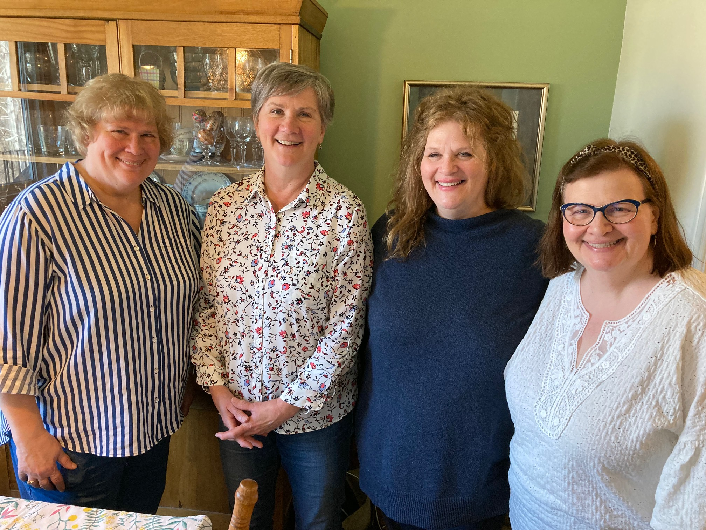
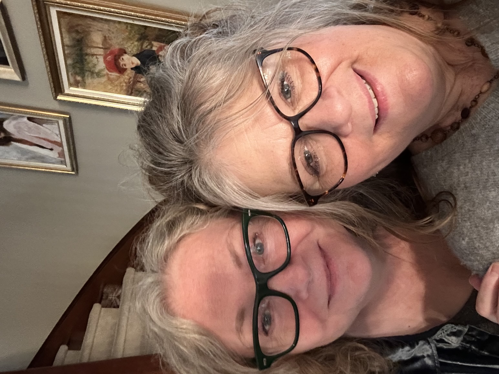
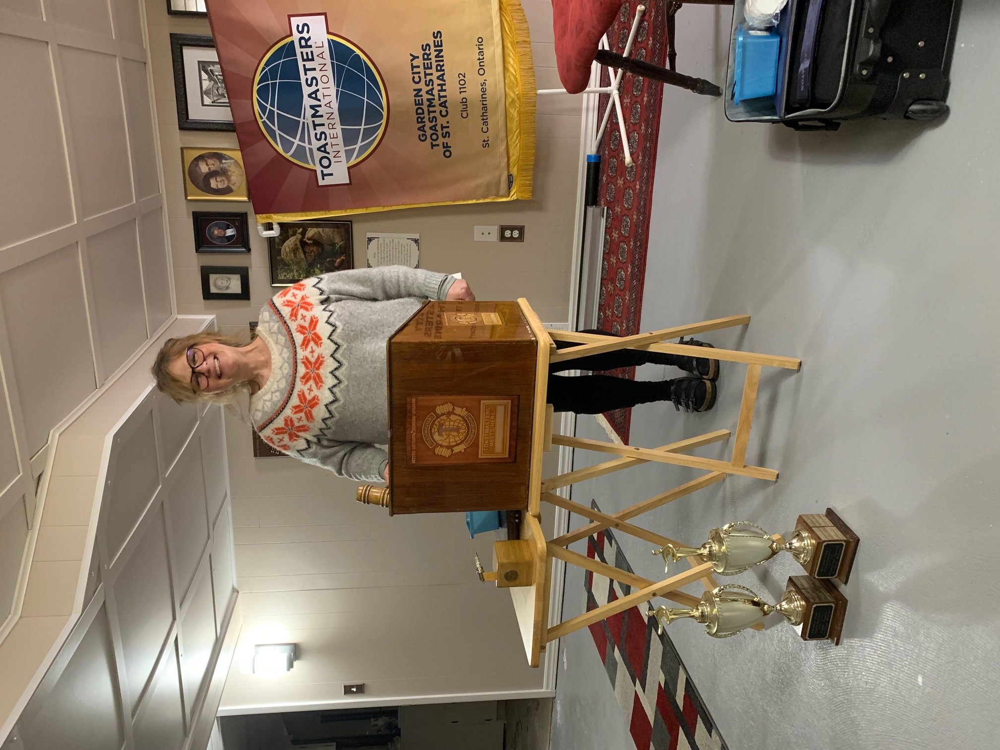
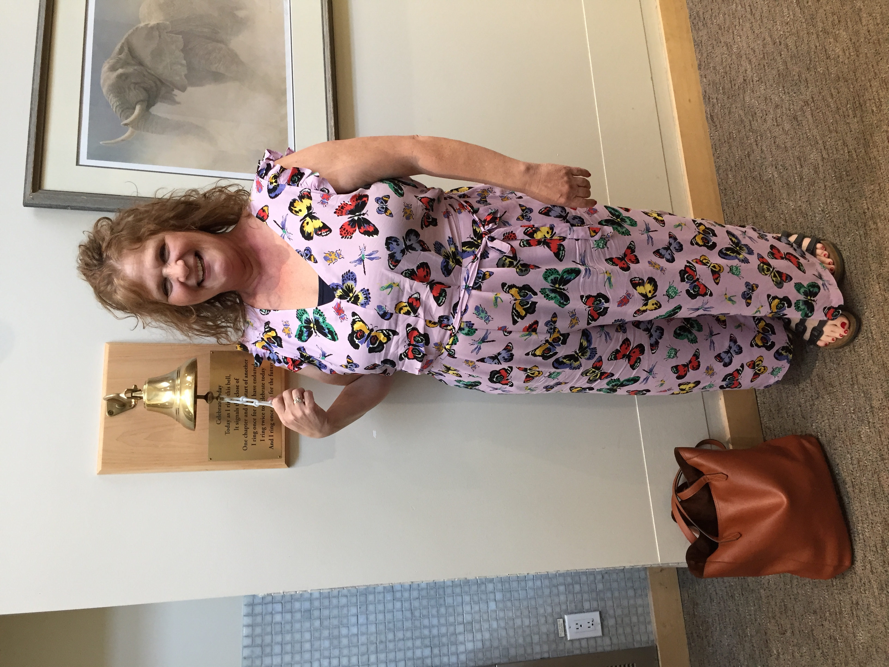
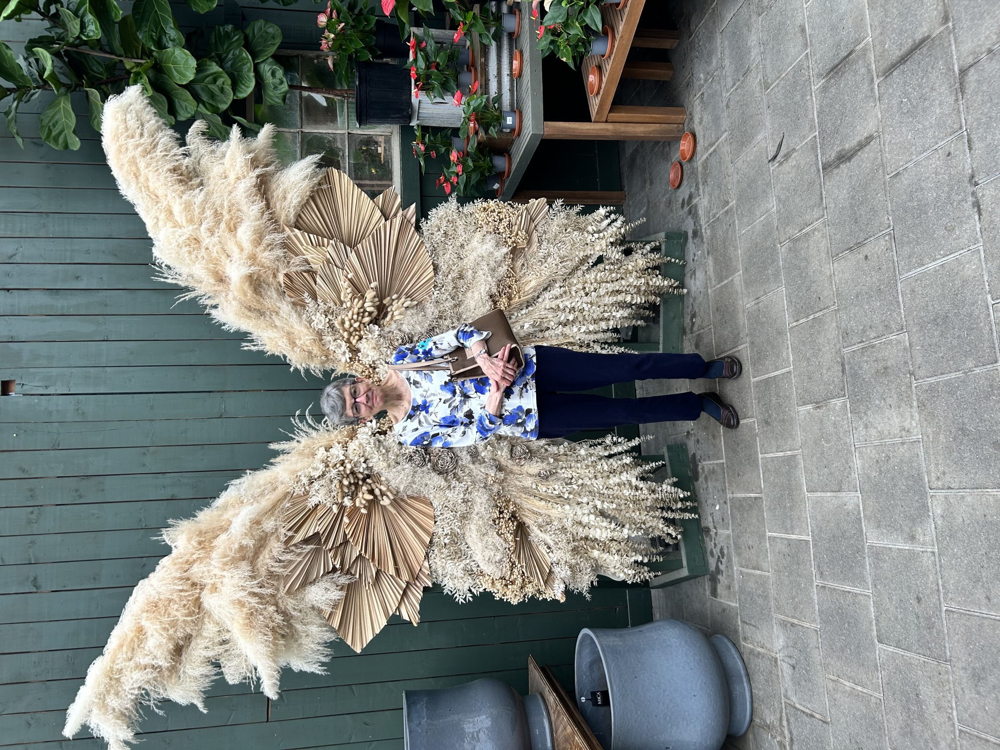
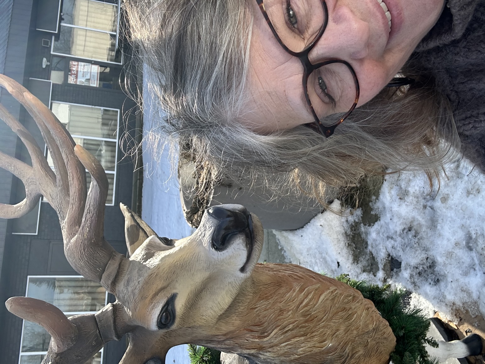
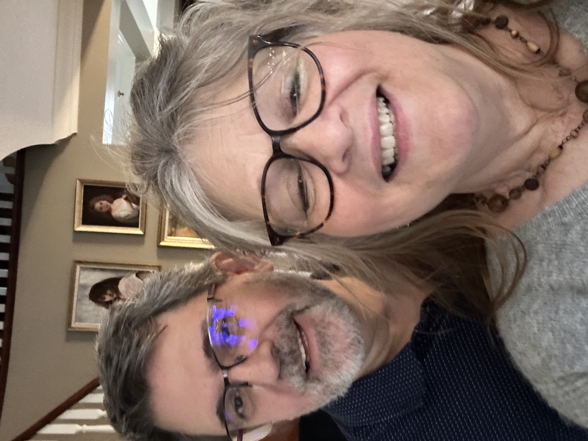
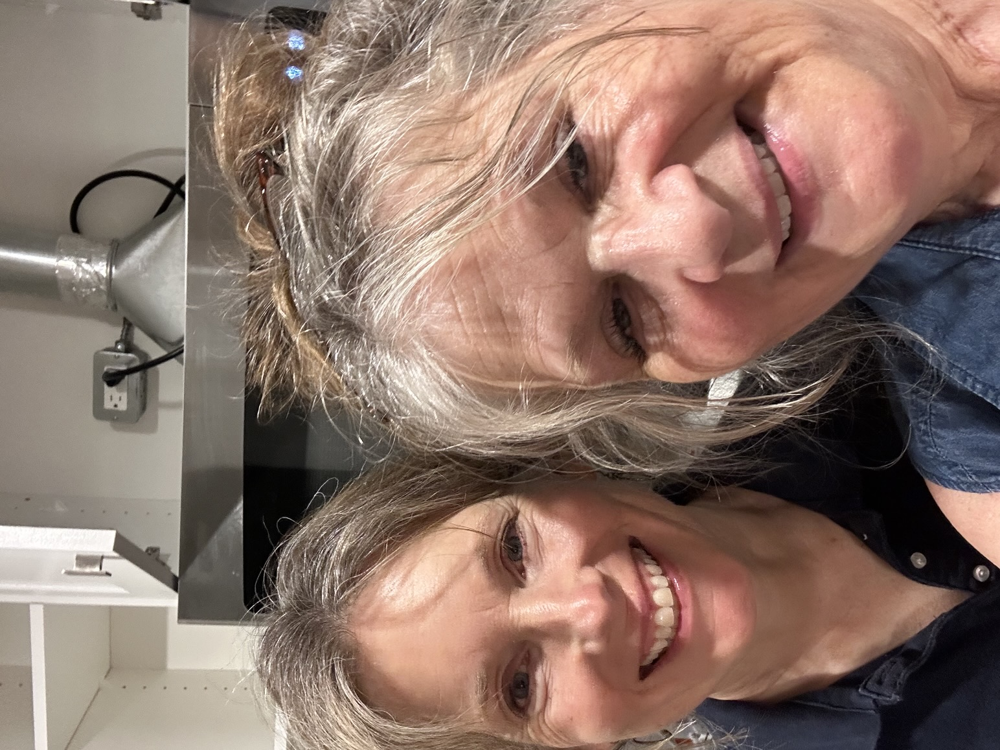
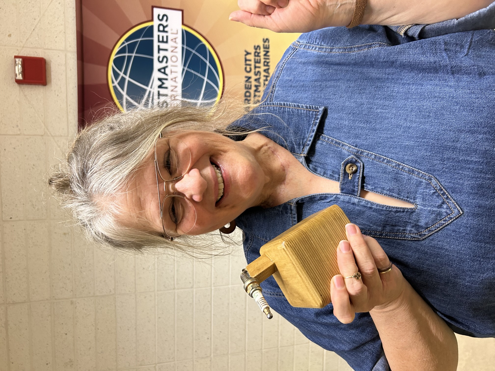